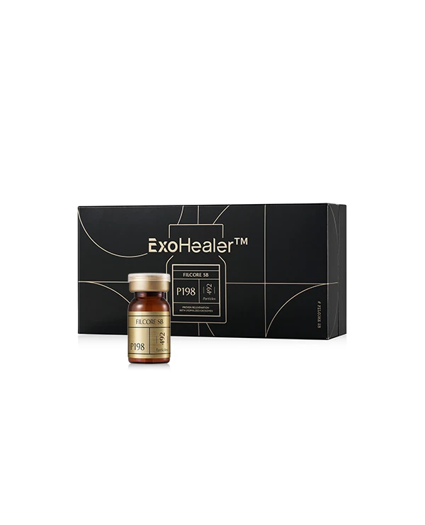

건조하고 당기는 피부
세안 후 당김과 수분감, 평소 보습 습관을 함께 살펴 관리 목표를 정합니다.
Skin, in balance.
뷰티블라썸의 엑소좀 관리는 P198 엑소힐러를 활용합니다. 건조함과 피부결, 민감해진 컨디션을 함께 살피고 관리의 방향을 정합니다.

P198 EXOHEALER
엑소힐러는 엑소좀을 활용한 스킨부스터 제품 브랜드입니다. 제품의 특징과 현재 피부 상태를 함께 확인하고 적용 방법과 관리 범위를 상담합니다.
원료의 이름만으로 효과를 단정하지 않습니다. 예민함의 원인, 최근 시술과 회복 정도까지 확인하는 것이 먼저입니다.
세안 후 당김과 수분감, 평소 보습 습관을 함께 살펴 관리 목표를 정합니다.
피부결과 모공 고민을 구분하고, 다른 관리가 함께 필요한지 상담합니다.
붉어짐이나 따가움이 있다면 원인부터 확인해 현재 가능한 관리를 선택합니다.
Small, but considered.
엑소좀은 세포가 분비하는 작은 소포입니다. 성분의 개념, 사용하는 제품, 실제 관리 방법을 구분해서 알아봅니다.
EXOSOME
엑소좀은 살아 있는 줄기세포 자체가 아닙니다. 세포에서 분비되는 작은 소포로, 내부에는 여러 생체 물질이 포함될 수 있습니다.
P198 엑소힐러는 엑소좀 성분을 활용한 제품입니다. 제품마다 원료와 구성, 사용 목적이 다를 수 있어 실제 사용하는 제품을 확인합니다.
피부의 자극과 회복 상태를 확인한 뒤 관리 방법을 정합니다. MTS·포텐자 등과의 병행 여부도 상담 후 결정합니다.
Care, step by step.
피부 상태에 따라 관리 방식과 회복 기간은 달라집니다. 중요한 일정이 있다면 상담할 때 함께 알려주세요.
건조함·피부결 고민과 알레르기, 복용약, 최근 시술을 확인합니다.
제품과 적용 방법을 설명하고 마취·병행 관리 여부를 정합니다.
상담한 범위에 맞춰 진행하며 따가움이나 불편감은 바로 알려주세요.
보습·자외선 차단과 자극을 줄이는 생활 관리로 경과를 살핍니다.
AFTER CARE
CHECK YOUR SKIN
붉어짐, 붓기, 멍, 따가움이나 작은 자국이 나타날 수 있으며 경과에는 개인차가 있습니다.
열감·통증·붓기·가려움이 점점 심해지거나 뚜렷한 불편감이 계속되면 병원으로 연락해 주세요.
시술 후 주의사항 보기 ↗Your questions.
관리 전 궁금했던 내용을
한 번 더 확인하세요.
엑소좀은 세포가 분비하는 작은 소포를 가리키는 말이고, P198 엑소힐러는 엑소좀 성분을 활용한 제품 브랜드입니다. 뷰티블라썸에서는 피부 상태와 관리 목적을 먼저 확인하고 엑소힐러 프로그램을 상담합니다.
건조함, 거친 피부결, 민감해진 피부 컨디션이 고민이라면 상담할 수 있습니다. 붉어짐이나 트러블이 반복된다면 먼저 원인을 확인합니다. 모든 피부 상태에 같은 관리가 적합한 것은 아닙니다.
살아 있는 줄기세포 자체와 엑소좀은 다릅니다. 엑소좀은 세포가 분비하는 작은 소포입니다. 원료에 대한 설명을 곧바로 특정 시술의 효과나 허가 범위로 해석하지 않고, 사용하는 제품과 적용 방법을 함께 확인해야 합니다.
피부 상태와 목표에 따라 MTS 또는 포텐자 등을 활용하는 관리 계획을 상담할 수 있습니다. 병행 여부와 팁, 적용 범위는 의료진이 판단하며 모든 분에게 같은 조합을 적용하지 않습니다.
기존 원내 안내는 약 30분 내외와 연고 마취를 기준으로 합니다. 준비·마취 시간, 관리 방식과 범위에 따라 실제 체류 시간은 달라질 수 있으므로 예약 시 확인해 주세요.
기존 원내 안내의 권장 간격은 2~4주입니다. 피부 반응과 회복 경과에 따라 간격과 횟수를 조정하므로 정해진 횟수를 모든 분에게 동일하게 적용하지 않습니다.
피부 컨디션은 서서히 변할 수 있어 수주 동안 경과를 살펴봅니다. 변화의 정도와 유지 기간은 피부 상태, 관리 방법, 생활습관에 따라 다르며 한 번의 관리로 같은 결과를 보장하지 않습니다.
관리 방법에 따라 붉어짐, 붓기, 멍, 따가움, 작은 자국 등이 나타날 수 있습니다. 원내 안내의 회복 기간은 1~3일이지만 더 오래 걸릴 수도 있습니다. 붉어짐·열감·통증·가려움이 점점 심해지면 병원에 연락해 주세요.
시술 후 받은 개별 안내를 우선해 주세요. 피부를 세게 문지르지 말고 보습과 자외선 차단을 챙깁니다. 약 1주간 음주, 흡연, 사우나와 격한 운동을 피하고 산 성분·레티놀·각질 제거 제품의 재개 시점은 의료진에게 확인합니다.
민감해진 원인과 현재 자극·염증·상처 여부를 먼저 확인해야 합니다. 알레르기와 복용약, 최근 레이저·필링 이력을 알려주세요. 피부 상태에 따라 진정 관리나 다른 치료를 먼저 권할 수 있습니다.
임신·수유 여부, 알레르기, 복용 중인 약과 최근 시술 이력을 알려주세요. 중요한 일정이 있다면 회복 기간도 함께 상담합니다. 복용약은 임의로 중단하지 않습니다.
뷰티블라썸의원은 합정역 3번 출구 앞, 서울 마포구 양화로 66 메디원메디컬센터 6층·8층에 있습니다. 접수는 6층이며 아래 네이버 예약·카카오톡·전화 링크에서 방문 일정과 관리 비용을 문의할 수 있습니다.
지금 내 피부에 필요한 관리,
뷰티블라썸에서 함께 찾아보세요.
나에게 맞는 이벤트를 펼쳐보세요.
Beauty, with care.
피부 상태와 원하는 변화를 세심하게 살피고,
정품·정량과 충분한 설명을 진료의 기본으로 생각합니다.

피부 상태와 일상, 원하는 변화를
함께 살펴 나에게 맞는 진료 계획을 세웁니다.

정품 사용과 정량 원칙을
진료의 기본으로 생각합니다.

개개인의 자연스러운 아름다움을 존중하며,
시술 과정과 관리 방법을 충분히 설명합니다.
Find us.
평일 10:00–20:00
주말·대체공휴일 10:00–16:30
점심시간 없이 진료 · 공휴일 진료는 문의
평일 10:00–20:00
주말·대체공휴일 10:00–16:30
점심시간 없이 진료 · 공휴일 진료는 문의